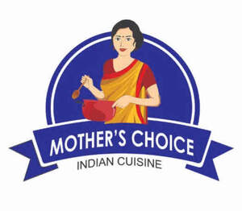

Trade Mark Journal No.2025/040 3 October 2025
UK00004267558 22 September 2025 (29,30)

- Class 29
- Food products in the class, namely, processed, frozen, dried and preserved fruits and vegetables; frozen, prepared and packaged entrees and meals consisting primarily of meat, fish, poultry or vegetables; frozen, prepared and packaged vegetable-based entrees; frozen appetizers consisting primarily of poultry, lamb, beef, seafood, or vegetables; fruit-based snack foods; snack mix consisting primarily of processed fruits, processed nuts and grains; meat, poultry, seafood not live, pork, fish not live; beef; dips, excluding salsa; potato chips and potato-based snack foods; fruit snacks, namely, fruit-based snack foods; frozen foods, namely, appetizers consisting primarily of poultry, lamb, beef, or seafood; fruit and vegetable based snack foods; candied nuts; coconut milk; coconut milk powder; coconut oil and fat for food: coconut oil for food; coconut powder; desiccated coconut: dried fruit-based snack bars; flavoured nuts; frozen meat; nut-based snack mixes; roasted nuts; vegetable mousses; vegetable oil for cooking; vegetable oils and fats for food; vegetable puree; vegetables in vinegar; pickled ginger; frozen vegetables; frozen cooked fish; frozen fish; frozen raw fish; frozen chips; quick frozen vegetables dishes; fish products being frozen; frozen French fries; frozen prepared meals consisting of vegetables; frozen pre-packaged entrees consisting primarily of seafood.
- Class 30
- Food products in the class, namely, frozen, prepared and packaged entrees consisting primarily of rice; bakery products; mixes for bakery goods; pastries; snack mix consisting primarily of crackers, corn, and rice flour-based products corn-based snack foods; bakery desserts; cakes; frozen confections; frozen dessert consisting of fruit, vegetables, and nuts, relishes; vinegar; processed herbs; seasoning mixes and seasonings; extracts used as food flavourings; flour; spices and spice rubs; frozen foods, namely, grain and bread based appetizers; packaged and prepared staple foods, namely, rice, rice flour-based products; all-purpose flour; baking spices; barley flour; brown rice; buckwheat flour; buckwheat flour for food: cake batter; cake dough; cake icing; cake mixes; cake powder; cereal-based snack food: corn flour; corn flour for food; corn starch flour; corn-based snack food; curry pastes; curry powder; curry powders; dried cooked-rice; edible flour; edible rice paper; edible spices; flour; flour for food; flour for making dumplings of glutinous rice; flour based dumplings; granola-based snack bars; gravy sauce; husked rice; instant rice; maize flour; meat gravies; nut flours; potato flour; potato flour for food; puffed rice; rice; rice flour; rice starch flour; rice-based snack food; soya flour, spices; spices in the form of powders; tapioca flour for food; toasted grain flour; wheat flour; wheat flour for food; wheat starch flour; wheat-based snack food: wholemeal rice; wild rice; chutneys; pickles; frozen confectionery; deep frozen pasta; frozen dough; frozen pastries; frozen pastry; frozen cakes; confectionery in frozen form; frozen prepared rice; frozen prepared rice with seasonings and vegetables; frozen pastry stuffed with meat and vegetables; rice flour based snacks; snacks; spices, namely, whole and ground; curry powders; pickles; tapioca; coffee; tea; cocoa; biscuits; sugar; sago; flour and preparations mad from cereals, bread, pastry and confectionery ices; honey, treacle; yeast, bakery-powders; salt; mustard; vinegar; sauces.
Geco International Ltd
geco international limited